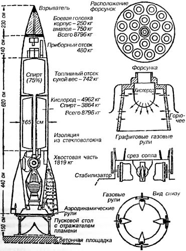
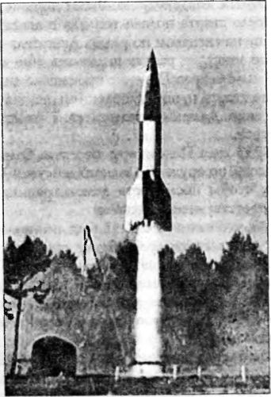
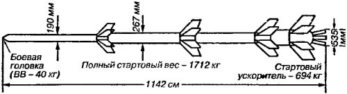

Реальность программы «Фау»
Первые образцы ракеты были изготовлены летом 1942 года. Они были почти на целую тонну тяжелее ракет «А-4», впоследствии запущенных в серийное производство. В законченном виде ракета выглядела следующим образом.
Ракета «А-4» состояла из четырех отсеков. Носовая часть представляла собой боевую головку весом около 1 тонны, сделанную из мягкой стали толщиной 6 миллиметров и наполненную аматолом. Выбор этого взрывчатого вещества объяснялся его малой чувствительностью к тепловым и ударным воздействиям. Ниже боевой головки находился приборный отсек, в котором наряду с аппаратурой помещалось несколько стальных цилиндров со сжатым азотом, применявшимся главным образом для повышения давления в баке с горючим. Ниже приборного располагался топливный отсек — самая объемистая и тяжелая часть ракеты. При полной заправке на топливный отсек приходилось три четверти веса ракеты. Бак со спиртом помещался наверху; из него через центр бака с кислородом проходил трубопровод, подававший горючее в камеру сгорания. Пространство между топливными баками и внешней оболочкой ракеты, а также полости между обоими баками заполнялись стекловолокном. Заправка ракеты жидким кислородом производилась перед самым пуском, так как потери кислорода за счет испарения составляли 2 килограмма в минуту. Поэтому даже 20-минутный интервал между заправкой и пуском приводил к потере около 40 килограммов жидкого кислорода. Это считалось (и считается) допустимым, но более длительная задержка требовала дозаправки бака с кислородом.
Самой важной новинкой в этой ракете было наличие турбонасосного агрегата для подачи компонентов топлива. В небольших ракетах проблема подачи жидких топлив в ракетный двигатель решалась путем наддува баков. При этом требуемое давление составляло около 21 атмосферы. В большой же ракете подобная система неприменима. Задача обеспечения давления для подачи топлива в ней может быть выполнена только специальными насосами.

В то время построить такой насос казалось почти невозможным, тем более что он должен был выполнять ряд функций: подавать компоненты топлива, одним из которых являлся сжиженный газ, под давлением порядка 21 атмосфер и перекачивать более 190 литров топлива в секунду. Кроме того, ему следовало быть достаточно простым по конструкции и очень легким, а в довершение всего насос должен был запускаться на полную мощность в течение очень короткого (6 секунд) промежутка времени. Когда фон Браун излагал эти требования персоналу завода, выпускающего насосы, он невольно ожидал возражений. Однако оказалось, что требуемый насос напоминает один из видов центробежного пожарного насоса.
Но, разумеется, любой насос нуждается в источнике энергии, то есть должен чем-то приводиться в движение. Для этого были использованы концентрированная перекись водорода и раствор перманганата, соединяя которые можно было быстро получить определенное количество парогаза постоянной температуры. Агрегат турбонасоса, парогазогенератор для турбины и два небольших бака для перекиси водорода и перманганата калия помещались в одном отсеке с двигательной установкой. Отработанный парогаз, пройдя через турбину, все еще оставался горячим и мог совершить дополнительную работу. Поэтому его направляли в теплообменник, где он нагревал некоторое количество жидкого кислорода. Поступая обратно в бак, этот кислород создавал там небольшой наддув, что несколько облегчало работу турбонасосного агрегата и одновременно предупреждало сплющивание стенок бака, когда он становился пустым. Эту же работу в линии подачи топлива выполнял сжатый азот.
Из турбонасосного агрегата оба жидких компонента топлива под давлением подавались в двигатель. Кислород поступал непосредственно к 18 форсункам, расположенным в головке двигателя. Спирт, прежде чем попасть к форсункам, проходил через рубашку охлаждения двигателя.
Для пуска ракета «А-4» устанавливалась на стартовом столе, представлявшем собой массивное стальное кольцо, укрепленное на четырех стойках. Кольцо должно было иметь строго горизонтальное положение, чтобы ракета стояла на столе в вертикальном положении. Ниже стального кольца по оси ракеты находился дефлектор (отражатель) реактивной струи, который представлял собой пирамиду из листовой стали, разбивавшей газовую струю ракетного двигателя в момент старта Для повышения живучести дефлектора его наполняли водой, поглощавшей часть тепла.
Заправка ракеты производилась после ее установки на стартовом столе. Все это время электрооборудование ракеты работало от внешнего источника питания, ток от которого подавался по кабелю к разрывному штекеру, удерживаемому в специальном гнезде на корпусе ракеты с помощью электромагнита. Штекер с кабелем отсоединялся от ракеты в момент старта. Воспламенение в ракетном двигателе осуществлялось с помощью простого пиротехнического устройства, вращающегося в горизонтальной плоскости внутри камеры сгорания. Из-за крестообразной формы оно было названо «воспламенительным крестом». Когда двигатель начинал работать, этот «крест» сжигался струей истекающих газов.
Запуск ракеты «А-4» осуществлялся в три этапа. Сначала воспламенялось пиротехническое устройство. Когда оно сгорало, открывались клапаны, и спирт и кислород первое время попадали в камеру сгорания только под действием силы тяжести, поскольку баки помещались над двигателем. Немцы называли этот этап «малой» или «предварительной» ступенью пуска.
На «предварительной» ступени двигатель работал с типичным оглушающим шумом, похожим на шум водопада; пламя, разбиваемое пирамидальным дефлектором, разбрасывалось во все стороны на много метров. Тяга составляла около 7 тонн, и этого, конечно, было недостаточно, чтобы поднять ракету, весящую почти в два раза больше. Но целью «предварительной» ступени являлся не действительный пуск ракеты, а показ того, что двигатель работает нормально. Если двигатель функционировал без перебоев, тут же включался парогазогенератор и начинал работать турбонасосный агрегат, создававший необходимое давление для подачи компонентов топлива в камеру сгорания. Чтобы поднять это давление до уровня, обеспечивающего переход к «главной ступени пуска», требовалось около 3 секунд. За это время резко увеличивалось пламя, вырывающееся из сопла двигателя, нарастал шум, а тяга поднималась с 7 до 27 тонн, заставляя ракету оторваться от земли.
Самым критическим периодом считались первые секунды полета, когда скорость была еще небольшой и ракета оказывалась весьма неустойчивой. В это время задачу балансировки ракеты выполняли газовые рули. Затем, когда скорость ракеты возрастала, аэродинамические стабилизаторы помогали газовым рулям, но дальше ракета поднималась на такие высоты, где окружающий воздух был слишком разреженным, и поэтому задача стабилизации ракеты опять ложилась на газовые рули. При вертикальном запуске газовые рули должны были только выравнивать ракету и держать ее в вертикальном положении, но при запуске по цели ракету приходилось еще на активном участке траектории наклонять в направлении цели. В последнем случае ракета оставалась в строго вертикальном положении только в течение первых четырех секунд, затем она наклонялась. Звуковой барьер ракета преодолевала через 25 секунд после старта, еще в период выведения ракеты на заданную траекторию. Этот период заканчивался на 54-й секунде. В течение следующих 8-10 секунд ракета продолжала движение по восходящей ветви наклонной и прямолинейной траектории.
К лету 1942 года первая небольшая серия ракет «А-4» была готова к летным испытаниям. К этому времени станция Пенемюнде уже представляла собой очень крупное предприятие, настолько крупное, что пришлось разделить «Пенемюнде — Восток» на две секции. Одна секция, в районе озера Кельпин, получила наименование «Пенемюнде — Север». Она занималась непосредственной разработкой ракет. Другая — на полпути между секцией «Пенемюнде — Север» и деревней Карлсхаген — была известна как производственно-экспериментальные цехи станции «Пенемюнде — Восток». Участок испытательной станции германских ВВС сохранял свое наименование «Пенемюнде — Запад».
Днем первого пуска ракеты «А-4» стало 13 июня 1942 года. После тщательной проверки ракеты и ее двигателя раздалась команда: «Внимание! Запал! Первая ступень!» И немного погодя: «Главная ступень!» Со страшным грохотом ракета «А-4» поднялась в воздух. Однако стабилизирована она была плохо; сразу получив крен, ракета начала совершать странные колебательные движения. Некоторое время ее шум был слышен над облаками, затем наступила тишина, а вслед за этим из слоя низких облаков появилась падающая ракета. Она была без хвостовых стабилизаторов и потому летела, кувыркаясь. Упав в море, ракета взорвалась и затонула.
Вторая ракета была запущена 16 августа. Сначала все шло хорошо, но потом оторвался носовой конус. Неудачи с двумя первыми ракетами «А-4» заставили инженеров и ученых разработать и провести серию всевозможных стендовых испытаний, прежде чем запускать третью ракету.

Испытание ее состоялось 3 октября 1942 года. День был ясный. Время запуска — полдень. Наблюдателям было видно, как вдали в воздух поднялось огромное облако пыли и песка, из которого через мгновение вырвалась ракета и, пролетев 4,5 секунды вертикально вверх, перешла на наклонную траекторию, в направлении на северо-восток. Ракета летела над Балтийским морем параллельно береговой линии на безопасном удалении от него. Голос из громкоговорителя мерно отсчитывал секунды после старта: «…восемнадцать, девятнадцать, двадцать…» На 21-й секунде ракета превысила скорость звука. Она была хорошо видна на фоне голубого неба. После 40-й секунды за ракетой появился белый инверсионный след, оставляемый конденсированными парами воды. Через 58 секунд после старта подача топлива в двигатель ракеты была прекращена сигналом по радио. Двигатель перестал работать. Но по инерции ракета поднялась еще выше — примерно до 48 километров. Падение произошло лишь на 296-й секунде после старта и, по наблюдениям, ракета упала в море в целом виде. Дальность полета этой ракеты составила 190 километров.
26 мая 1943 года Пенемюнде посетила большая группа членов комиссии по оружию дальнего действия. Они прибыли для того, чтобы посмотреть демонстрацию моделей и принять соответствующее решение.
Дело в том, что начиная с 1942 года станция «Пенемюнде — Запад» осуществляла разработку еще одной системы оружия дальнего действия под названием «Fi-103» («Fieselег»), которой благодаря Министерству пропаганды Геббельса позднее было присвоено наименование: самолет-снаряд «Фау-1» («V-1» от немецкого слова «Vergeltungswaffen» — «Оружие возмездия»).
В техническом отношении самолет-снаряд «Фау-1» конструкции немецкого инженера Фритца Госслау был точной копией морской торпеды. После пуска снаряда он летел с помощью автопилота по заданному курсу и на заранее определенной высоте. «Фау-1» имел фюзеляж длиной 7,8 метра, в носовой части которого помещалась боеголовка с 1000 килограммами взрывчатого вещества За боеголовкой располагался топливный бак с 80-октановым бензином. Затем шли два оплетенных проволокой сферических стальных баллона сжатого воздуха для обеспечения работы рулей и других механизмов. Хвостовая часть была занята упрощенным автопилотом, который удерживал самолет-снаряд на прямом курсе и на заданной высоте. Размах крыльев составлял 540 сантиметров. Самой интересной новинкой был пульсирующий воздушно-реактивный двигатель, установленный в задней части фюзеляжа и похожий на ствол старомодной пушки.
Пульсирующие воздушно-реактивные двигатели «As014», производившиеся фирмой «Аргус» («Argus»), представляли собой стальные трубы, открытые с задней части и закрытые спереди пластинчатыми пружинными клапанами, открывавшимися под давлением встречного потока воздуха. Когда воздух, открыв клапаны решетки, входил в трубу, здесь создавалось повышенное давление; одновременно сюда впрыскивалось топливо; происходила вспышка, в результате которой расширившиеся газы действовали на клапаны, закрывая их, и создавали импульс тяги. После того как продукты сгорания выбрасывались через реактивное сопло, в камере сгорания создавалось пониженное давление и воздух снова открывал клапаны; начинался новый цикл работы двигателя. Расход топлива составлял 2,35 литра на километр. Бак вмещал около 570 литров бензина.
Пульсирующий воздушно-реактивный двигатель обязательно требует предварительного разгона до скорости минимум 240 км/ч. Для этого использовалась наклонная пусковая установка с трубой, имеющей продольный паз. Поршень, двигающийся в этой трубе, был снабжен выступом, которым он сцеплялся с самолетом-снарядом при разгоне. Поршень приводился в движение за счет газов, образующихся при распаде перекиси водорода. Как только пульсирующий воздушно-реактивный двигатель начинал работать, скорость самолета-снаряда возрастала до 580 км/ч. «Фау-1» имел часовой механизм, с помощью которого осуществлялось «наведение» на цель; он срабатывал, когда кончался запас топлива, и самолет-снаряд пикировал вниз.
Комиссия по оружию дальнего действия должна была сделать выбор между «Fi-103» и «А-4». Оба они представляли собой два совершенно отличных друг от друга типа вооружения. Так, самолету-снаряду «Fi-103» атмосфера служила одновременно и аэродинамической опорой и источником окислителя (кислорода), необходимого для сгорания топлива. В отличие от него ракета «А-4» была баллистическим снарядом, который летел по траектории, схожей с траекторией артиллерийского снаряда. Крылатый снаряд стоил дешевле, чем баллистический, примерно в 10 раз, но легко сбивался зенитными орудиями, ракетами и истребителями-перехватчиками.
Вес боевой головки был почти одинаковым; примерно так же обстояло дело и с дальностью: предполагалось, что оба снаряда будут иметь дальность полета порядка 320 километров, Позднее выяснилось, что средняя дальность самолета-снаряда «Фау-1» составляла около 240 километров, в то время как средняя дальность полета ракеты «А-4» равнялась 306 километрам.
Прежде чем комиссия приступила к обсуждению данного вопроса, оба типа снарядов были ей продемонстрированы в действии. Две ракеты «А-4» успешно выдержали испытание, показав дальность 260 километров. Один самолет-снаряд «Fi-103» поднялся хорошо, но разбился после непродолжительного полета; второй вообще не сработал. Тем не менее комиссия решила рекомендовать разработку и производство обеих систем при условии, что в боевых условиях они будут применяться во взаимодействии.
Через два дня после этого Дорнбергер был вызван на аудиенцию к Гитлеру, которая состоялась 7 июля 1943 года в Растенбурге (Восточная Пруссия). Гитлеру были показаны фильм о запуске снарядов, макет большого бункера, строившегося в Ваттене, а также модели ракеты и ее средств транспортировки: специальной повозки «видальвагена» и самоходного лафета «мейлервагена». После этого Гитлер отдал распоряжение считать Пенемюнде самым важным объектом, но в то же время потребовал, чтобы боевая головка ракеты весила не менее 10 тонн.
И тут в игру вступили союзники. Вечером 17 августа 1943 года немцы узнали о концентрации крупных сил английской бомбардировочной авиации над Балтийским морем. Над островом Рюген английские самолеты, вместо того чтобы повернуть на юг в направлении Берлина, изменили курс на юго-восток. Этой ночью Пенемюнде подверглось налету более 300 тяжелых бомбардировщиков, сбросивших свыше 1500 тонн фугасных и огромное количество зажигательных бомб. Целями бомбардировки были испытательные стенды, производственные цехи и поселок на острове Узедом. Испытательная станция «Пенемюнде — Запад» бомбардировке не подверглась, весь удар пришелся по району гавани с электростанцией и заводом по производству жидкого кислорода. Потери в людях составили 735 человек; среди них погибли доктор Вальтер Тиль, руководивший разработкой двигателей, и главный инженер Вальтер. Сооружениям также был нанесен значительный ущерб.
Однако Пенемюнде продолжало работать, приближая день запуска в производство принятых на вооружение ракет.
В начале июня 1944 года в Лондоне было получено донесение о том, что на французское побережье Ла-Манша доставлены немецкие управляемые снаряды. Английские летчики сообщали, что вокруг двух сооружений, напоминавших лыжи, замечена большая активность противника. Вечером 12 июня немецкие дальнобойные пушки начали обстрел английской территории через Ла-Манш, вероятно, с целью отвлечь внимание англичан от подготовки к запуску самолетов-снарядов. В 4 часа ночи обстрел прекратился. Через несколько минут над наблюдательным пунктом в Кенте был замечен странный «самолет», издававший резкий свистящий звук и испускавший яркий свет из хвостовой части. Через 18 минут «самолет» с оглушительным взрывом упал на землю в Суонскоуме, близ Грейвсенда. В течение последующего часа еще три таких «самолета» упали в Какфилде, Бетнал-Грине и в Плэтте. В результате этих взрывов в Бетнал-Грине было убито шесть и ранено девять человек. Кроме того, был разрушен железнодорожный мост.
Это стало началом так называемого «Роботблица» — войны механизмов.
В ходе этой войны по Англии было выпущено 8070 самолетов-снарядов «Фау-1». Из этого количества, по английским данным, 7488 штук были замечены службой наблюдения, а 2420 достигли района целей. Истребители английской ПВО уничтожили 1847 «Фау-1», расстреливая их бортовым оружием или сбивая спутным потоком; зенитная артиллерия уничтожила 1878 самолетов-снарядов, об аэростаты заграждения разбилось 232 снаряда. В целом было сбито почти 53 % всех самолетов-снарядов «Фау-1», выпущенных по Лондону, и только 32 % наблюдаемых самолетов-снарядов прорвалось к району целей.
Но даже этим количеством самолетов-снарядов немцы нанесли Англии большой ущерб. Было уничтожено 24491 жилое здание, 52293 постройки стали непригодными для жилья. Погибли 5864 человека, 17197 были тяжело ранены.
Общие данные о перехваченных самолетах-снарядах не могут дать полного представления о масштабах борьбы, развернувшейся против немецких реактивных снарядов. В течение первого периода «Роботблица» англичане фактически не знали, как защищаться от нового оружия, не было у них и соответствующей организации. Зенитной артиллерии и истребителям приходилось действовать против самолетов-снарядов осторожно, чтобы не мешать друг другу. В конце концов на артиллерию была возложена задача прикрытия внешнего оборонительного пояса, а на истребительную авиацию — внутреннего.
К сентябрю 1944 года ракеты «Фау-2» (так с определенного момента стала называться ракета «А-4»), организованные в подвижные батареи, были готовы для боевого применения.
Интересно отметить, что впервые ракеты «Фау-2» были выпущены не по Лондону, а по Парижу. 6 сентября 1944 года в направлении Парижа были запущены две ракеты «Фау-2». Одна из них не долетела до цели, другая же разорвалась в городе, хотя об этом нигде не сообщалось. Следующие две ракеты были запущены по Лондону с перекрестка шоссе на окраине голландской столицы.
В официальном английском докладе этот первый обстрел Лондона ракетами «Фау-2» описан следующим образом:
«Приблизительно в 18 часов 40 минут 8 сентября 1944 года лондонцы, возвращавшиеся домой с работы, были сильно удивлены резким звуком, который очень походил на отдаленные раскаты грома. В 18 часов 43 минуты в Чисуике упала и взорвалась ракета, убив троих и тяжело ранив еще около десяти человек. Через 16 секунд после первой недалеко от Эппинга упала другая ракета, разрушив несколько деревянных домов, но не вызвав никаких жертв. В течение дальнейших десяти дней ракеты продолжали падать с интенсивностью не более двух ракет в день. 17 сентября союзники предприняли воздушно-десантную операцию в низовьях Рейна у Арнема. Вследствие этого германское верховное командование передвинуло ракетные части в восточном на правлении, и со следующего дня ракетные удары по Лондону временно прекратились. За этот период по Англии было выпущено 26 ракет, причем 13 из них упали внутри лондонского района обороны».
«Ракетное наступление» немцев на Англию закончилось лишь 27 марта 1945 года в 16 часов 45 минут, когда ракета с № 1115 упала в районе Орпингтона, в графстве Кент. За семь месяцев немцы выпустили в направлении Лондона по меньшей мере 1300 и по Нориджу около 40 ракет «Фау-2». Из них 518 упало в пределах лондонского района обороны, но ни одна не взорвалась в черте Нориджа. В Лондоне от ракет погибло 2511 человек, а 5869 человек были тяжело ранены. В других районах потери составили 213 человек убитыми и 598 тяжело раненными. В последний раз боевые ракеты «Фау-2» были применены во время сражения за Антверпен.
Помимо самолета-снаряда «Фау-1» и баллистической ракеты «Фау-2», в «Роботблице» была использована первая серийная многоступенчатая ракета «Рейнботе», разработанная фирмой «Рейнметалл-Борзиг». Эта ракета имела длину свыше 11 метров и представляла собой сочетание трех ракет со стартовым ракетным ускорителем. Запуск этой ракеты напоминал стрельбу из артиллерийского орудия, так как в качестве пусковой направляющей использовалась стрела «мейлервагена». Ускоритель и все три ступени работали на твердом топливе — дигликольдинитрате; каждая ступень своей головной частью сочленялась с открытым концом трубчатого корпуса предыдущей ступени. Когда двигатель нижней (первой) ступени прекращал работать, воспламенялась специальная смесь пороха и нитроглицерина, которая поджигала заряд дымного пороха. Последний воспламенял следующую ступень, которая в этот момент отсоединялась от использованной первой ступени. Третья ступень ракеты «Рейнботе» имела длину около 4 метров и диаметр 198 миллиметров; она развивала скорость до 1600 м/с уже через 25,6 секунды после старта всей системы. Однако максимальная дальность действия ракеты «Рейнботе» оставалась сравнительно небольшой — всего 220 километров.

Тем не менее эта дальность для ракеты на твердом топливе в те годы была просто удивительной. Ее достоинства значительно снижало то, что она несла весьма небольшой боевой заряд — всего 40 килограммов. Несмотря на этот факт, ракеты «Рейнботе» были по настоянию Гитлера использованы на фронте. В ноябре 1944 года из голландского городка Зволле по Антверпену было выпущено 20 ракет «Рейнботе». В условиях, когда по городу одновременно вели огонь многие другие огневые средства, действие ракет «Рейнботе» осталось почти незамеченным.
Порт Свинемюнде и остров Узедом вместе с Пенемюнде были заняты 5 мая 1945 года войсками советского 2-го Белорусского фронта под командованием маршала Рокоссовского. Само Пенемюнде взяли штурмом подразделения майора Анатолия Вавилова, на которого была возложена ответственность за сохранность оставшегося оборудования. Немецкие конструкторы и проектировщики эвакуировались в Баварию еще до прихода русских и провели там несколько тревожных недель.
Наконец, когда стало ясно, что все окружающие районы заняты американскими войсками, младший брат Вернера фон Брауна Магнус был послан отыскать кого-либо из американцев, кому персонал исследовательского ракетного центра мог сдаться официально.
В это время американские войска захватили подземный ракетный завод, расположенный близ Нидерзаксверфена — на территории, которая по соглашению должна была стать русской зоной оккупации. Разумеется, переместить подземный завод было невозможно. Однако к тому времени, когда союзные офицеры приступили к исполнению необходимых формальностей для передачи завода русским, около 300 товарных вагонов, груженных оборудованием и деталями ракет «Фау-2», уже находились на пути в Западное полушарие. Американцы позаботились и о том, чтобы заполучить себе немецких научных сотрудников, для чего была проведена операция «Пейпер-клипс». Только очень немногим специалистам в области ракет удалось остаться в Германии…